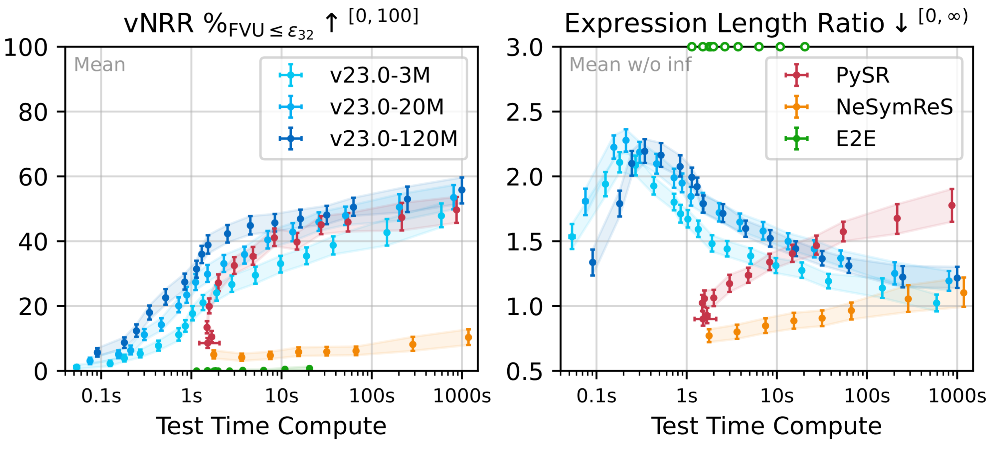

"Symbolic regression (SR) aims to discover interpretable analytical expressions that accurately describe observed data.
Amortized SR promises to be much more efficient than the predominant genetic programming SR methods, but currently struggles to scale to realistic scientific complexity.
We find that a key obstacle is the lack of a fast reduction of equivalent expressions to a concise normalized form.
Amortized SR has addressed this by general-purpose Computer Algebra Systems (CAS) like SymPy, but the high computational cost severely limits training and inference speed.
We propose SimpliPy, a rule-based simplification engine achieving a 100-fold speed-up over SymPy at comparable quality.
This enables substantial improvements in amortized SR, including scalability to much larger training sets, more efficient use of the per-expression token budget, and systematic training s[...]
We demonstrate these advantages in our Flash-ANSR framework, which achieves much better accuracy than amortized baselines (NeSymReS, E2E) on the FastSRB benchmark.
Moreover, it performs on par with state-of-the-art direct optimization (PySR) while recovering more concise instead of more complex expressions with increasing inference budget."